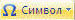

2.3 Вставка символов, отсутствующих на
клавиатуре
- Поместите курсор туда, куда необходимо вставить
символ.
- Выберите Символ  на
вкладке Вставка, а затем - нужный символ. Если нужного символа нет в
списке - выберите Другие символы.
Назад | Содержание
| Вперед